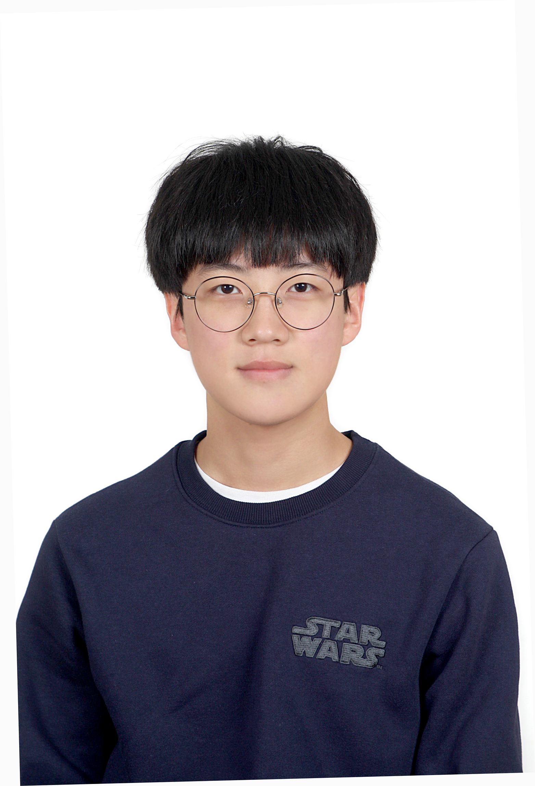
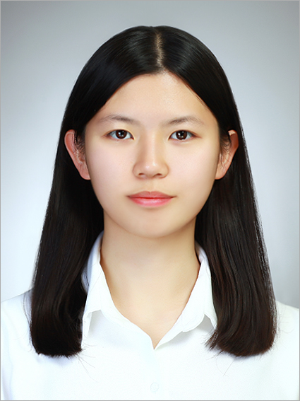

방찬혁
B.S. Electrical and Electronic Engineering, Inha University
SK hynix
Members / Alumni
Graduated members, thesis topics, and current affiliations.
Graduated members continue their careers across semiconductor, EDA, electronics, and research organizations.
B.S. Electrical and Electronic Engineering, Inha University
SK hynix

B.S. Electrical and Electronic Engineering, Inha University
SK hynix
M.S. Electrical and Computer Engineering, Inha University
ETRI | Thesis: A New Programmable Instruction Set Architecture for Linear and Nonlinear Memory Test Pattern Generation
M.S. Electrical and Computer Engineering, Inha University
TERADYNE | Thesis: CAN ID Error Detection for High Reliability Automotive Network
B.S. Computer Engineering, Chonnam National University
Telechips | Thesis: AI-Based Medicine Delivery Robot
B.S. Electronic Engineering, Chonnam National University
HARMAN (SoC Verification) | Thesis: Gas Detection Drone for Digital Immune Systems
M.S. ICT Convergence System Engineering, Chonnam National University
Telechips | Thesis: Hardware-Optimized Security Circuits Against Invasive Attacks

M.S. ICT Convergence System Engineering, Chonnam National University
Thesis: TSV Testing Method Based on Two-Dimensional Diagonal Parity Check

M.S. ICT Convergence System Engineering, Chonnam National University
Thesis: A Study on Early Termination Techniques for TSV Repairability
M.S. ICT Convergence System Engineering, Chonnam National University
Siemens EDA | Thesis: Timestamp-Based Detection Scheme for Security IPs Protection Against Invasive Attacks
B.S. Computer Engineering, Chonnam National University
POSCO
B.S. Computer Engineering, Chonnam National University
Advantest
B.S. Computer Engineering, Chonnam National University
Samsung Electronics, Memory Business
B.S. Computer Engineering, Chonnam National University
POSCO